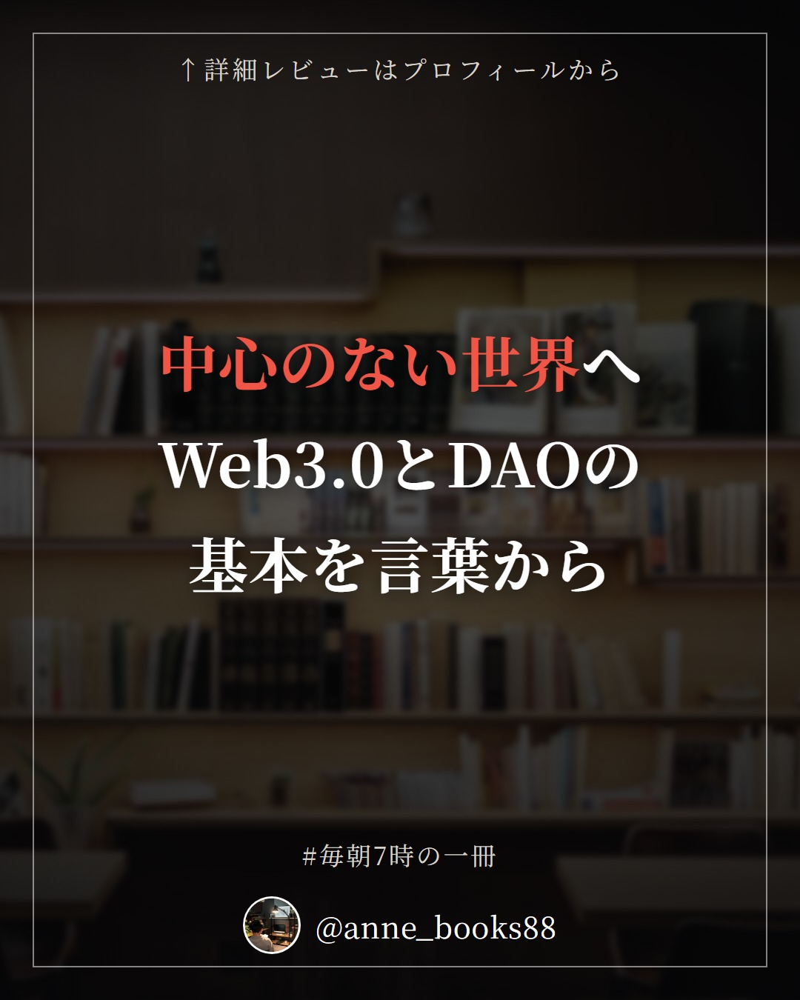
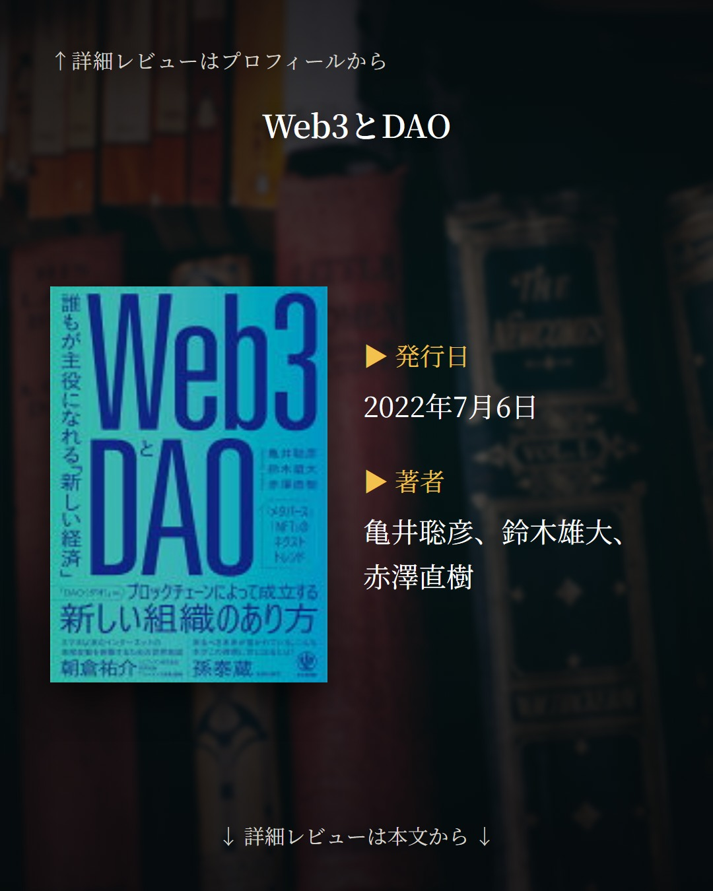
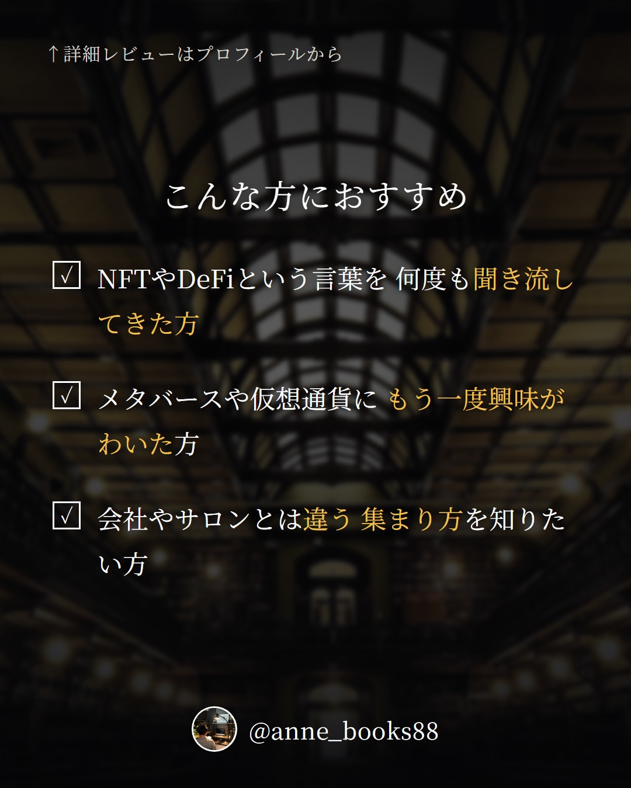
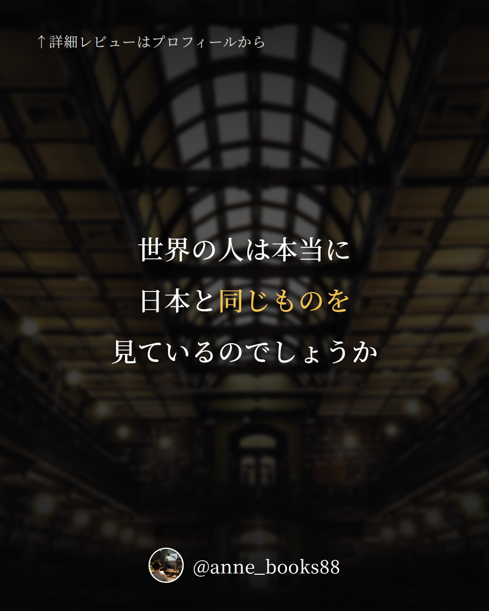
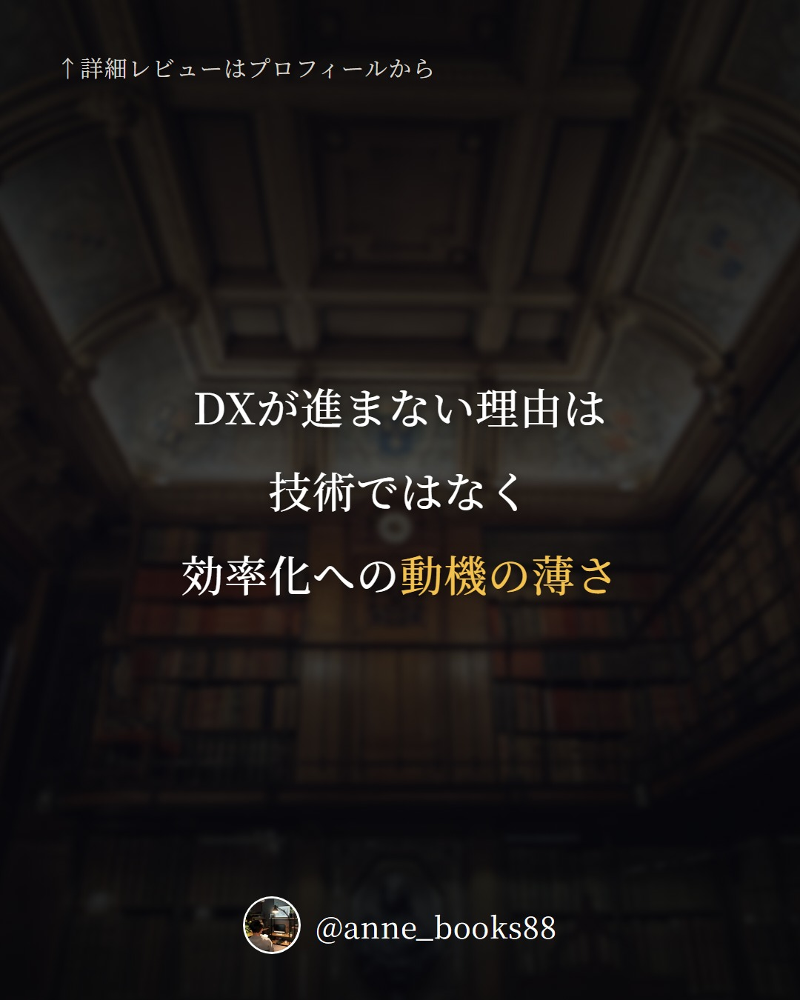
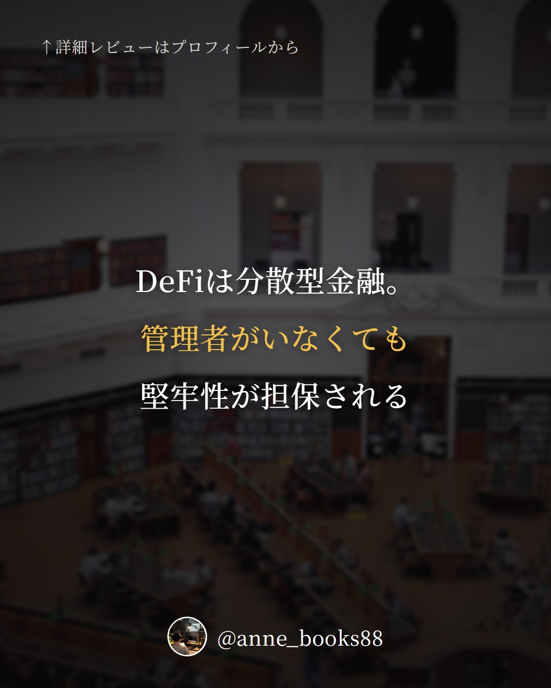
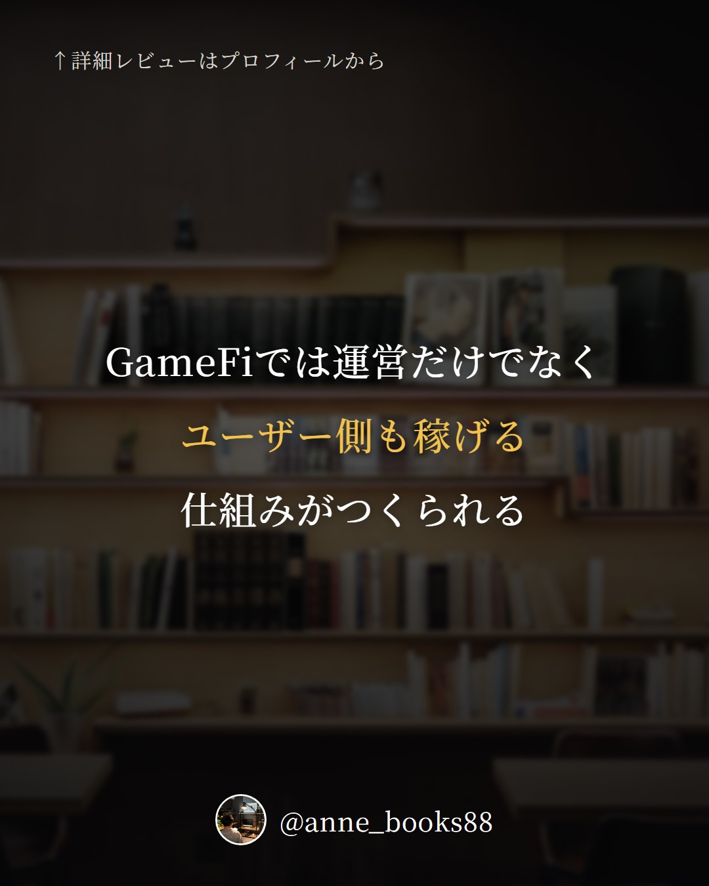
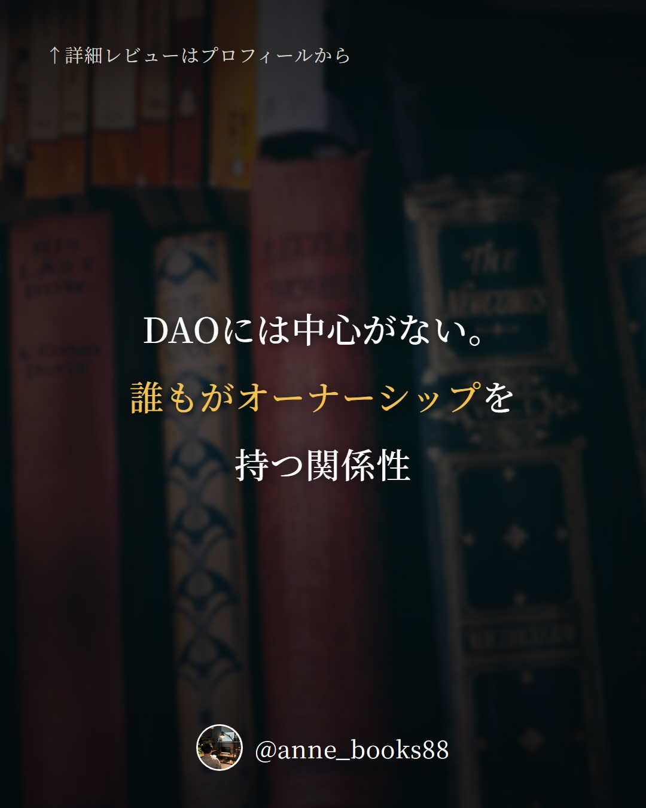
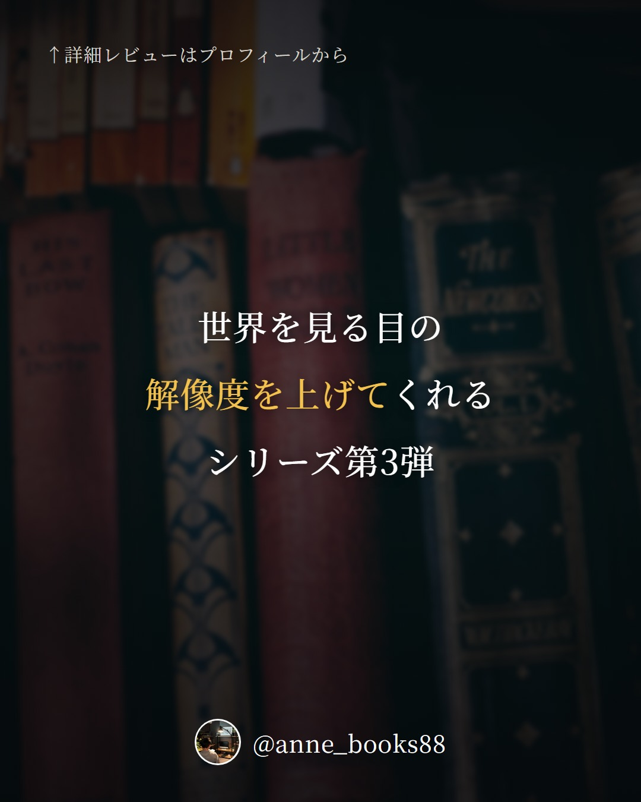
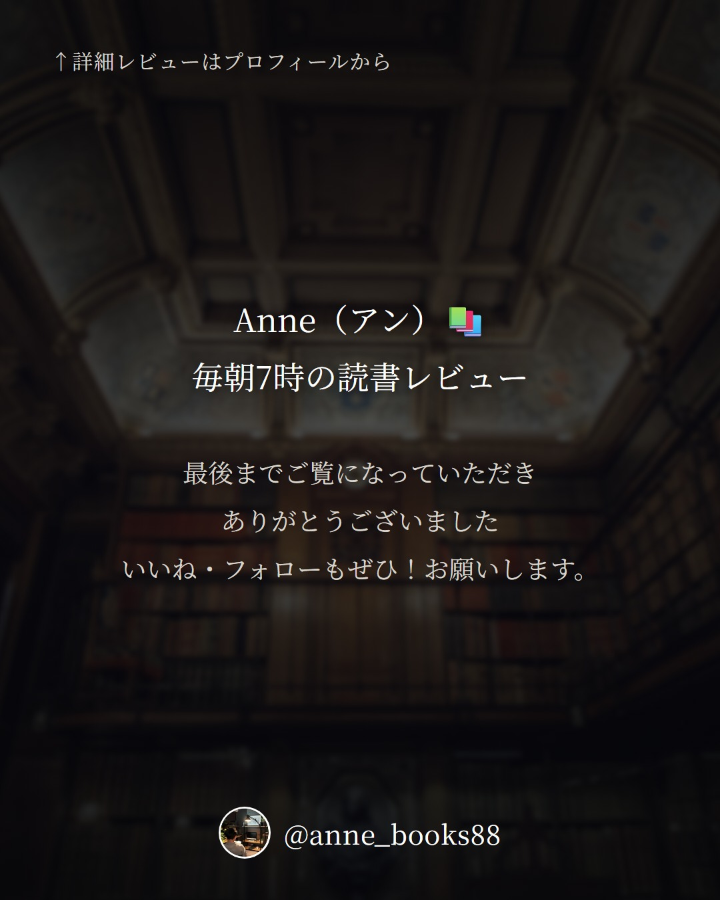

これから配信する投稿
まだ投稿していない下書きを、日付の早い順に14件まで並べています。 投稿が済んだ分は自動的に消えます。更新日時: 2026-10-25 23:02
10/25 (Sun)
Web3とDAO
亀井聡彦、鈴木雄大、赤澤直樹










カードの文言
- 1 表紙: 中心のない世界へ Web3.0とDAOの 基本を言葉から
- 2 書誌情報: 2022年7月6日 / 亀井聡彦、鈴木雄大、赤澤直樹
- 3 おすすめ1: NFTやDeFiという言葉を 何度も聞き流してきた方
- 3 おすすめ2: メタバースや仮想通貨に もう一度興味がわいた方
- 3 おすすめ3: 会社やサロンとは違う 集まり方を知りたい方
- 4 問いかけ: 管理する人がいなくても お金やゲームは 成り立つのでしょうか
- 5 本文: NFTは非代替性トークン。 ブロックチェーンで 唯一無二を証明する
- 6 本文: DeFiは分散型金融。 管理者がいなくても 堅牢性が担保される
- 7 本文: GameFiでは運営だけでなく ユーザー側も稼げる 仕組みがつくられる
- 8 本文: DAOには中心がない。 誰もがオーナーシップを 持つ関係性
- 9 まとめ: バズワードを一つずつ ほどいて、Web3.0の 輪郭をつかむ一冊
キャプション
今回はWeb3.0とDAOの入門書です。AppleのVR発表を見て、もう一度メタバースへの興味がわいたタイミングで読みました。 面白かったのは、Web3.0まわりのバズワードが一本の線でつながって見えてくるところです。NFTは非代替性トークン。ビットコインのような代替性トークンとは違い、ブロックチェーンの発達によって唯一無二であることを証明できる。だからデジタル上に価値を保存できるようになった、という説明はすっきり腑に落ちました。 DeFiは分散型金融で、企業が管理する中央型金融と違って管理者がいない。それでもブロックチェーンによって堅牢性が担保されている。管理者がいないのに壊れない、という発想の転換が新鮮でした。 GameFiも印象的です。ソーシャルゲームは運営側が儲かる構造ですが、ブロックチェーンで管理されるゲームではユーザー側も儲かる。ゲーム内で稼いだお金を、初期費用を負担した他のユーザーと折半することで成り立つ仕組みだと知りました。 そしてDAO。中心がなく、会社やサロンとも違う関係性で、誰もがオーナーシップを持つ。ここが本書の一番の芯だと感じています。 読んだ勢いで、私も仮想通貨とSTEPN（walk to earn）を始めてみます。言葉だけ知っている状態から一歩進みたい方に。
書籍固有ハッシュタグ
10/27 (Tue)
武器としての組織心理学
山浦一保


カードの文言
- 1 表紙: 厄介だけど 放置できない 人間関係の扱い方
- 2 書誌情報: 2021年9月16日 / 山浦一保
- 3 おすすめ1: チームの人間関係に 手を焼いているリーダーの方
- 3 おすすめ2: 妬みや対立を 前向きな力に 変えたい方
- 3 おすすめ3: 科学的な根拠から マネジメントを 学び直したい方
- 4 問いかけ: 人が動かないのは やる気の問題ではなく 心理の仕組みでは？
- 5 本文: 人は保有することに こだわる。だから現状維持を 選んでしまう
- 6 本文: 妬みには悪性と良性がある。 負けず嫌いは よい方へ向ける
- 7 本文: 大体の事は面倒くさい。 でも丁寧にやることが 大事につながる
- 8 本文: リスクを取っても大丈夫。 その心理的安全性が 職場を支える
- 9 まとめ: 科学的エビデンスで 人間の本性を見直す リーダーシップの教科書
キャプション
今回は、リーダーシップを心理学から捉え直す一冊です。 読んでいて一番おもしろかったのは、人間は生来「保有すること」へのこだわりが強い、という話でした。カーネマンのマグカップ実験が紹介されていて、手放したくない気持ちが強いからこそ、現状維持で安心を得ようとする非合理的な選択をしてしまう。組織が変わらない理由を、性格や意欲ではなく人間の仕組みとして説明されると納得感がありました。 もうひとつは妬みの扱い方です。妬みには排他的な悪性のものと、羨望や協力につながる良性のものがある。同じ負けず嫌いでも、どちらに向くかで職場の空気はまるで変わる。ポジティブなほうへ向けるという視点は、自分自身にも使えると感じました。 そして、世の中の大体の事は面倒くさいけれど、丁寧にやることが大事につながるという一文。派手さはないですが、ここが一番効く気がしています。個人がリスクを取っても大丈夫だと思える心理的安全性、謝ることが自分自身のストレス低減にもつながるという指摘も印象に残りました。 出版社の紹介では、心理学から脳科学、集団力学まで科学的エビデンスに基づく「リーダーシップの新しい教科書」とされています。人を動かす立場にいる方は、手元に置いておくと心強い一冊だと思います。